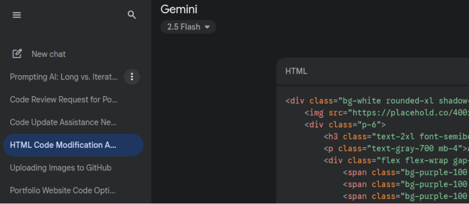

Working with AI
Focus: AI as a Learning & Problem-Solving Partner
Overview
Many of the projects highlighted in this portfolio were accomplished with the assistance of AI. I learned a great deal about how to utilize LLMs like Gemini, ChatGPT, CoPilot, and Claude as a problem-solving partner. In many cases, AI became my teacher/coach, especially when I needed to learn and apply unfamiliar technical concepts. Perhaps the most valuable lesson I learned was how to work extensively with AI to take on unanticipated challenges.

The "Story" of My AI-Assisted Projects
Below is a summary of how I utilized AI to enhance and complete many of the projects in this portfolio:
The Journey Begins
This journey began when I completed Google’s Professional Cybersecurity certification program, which sparked my interest in networking, Linux, the command line, virtualization, and web development.
My First Operating System Conversion
With technical guidance from Gemini, I converted a decade-old Windows laptop into my first Linux machine. This allowed me to begin experimenting with the command line interface and, eventually, virtualization.
Introduction to Virtual Machines
I used the Linux laptop as a host to create my first virtual machines (using KVM), again with Gemini’s technical assistance. This project included installing my first virtual server (Ubuntu LTS), which led me to begin thinking about creating my own home lab.
AI's Role: First Steps Toward My Home Lab
I eventually reached the technical limits of the older laptop when I attempted to use KVM to run “red versus blue” cybersecurity tests. At this point, I was working with multiple AI models for invaluable technical advice.
Modern Hardware Migration with AI
I installed a more advanced Linux distro (Pop!_OS) on a modern Lenovo ThinkPad. With multiple AI models as my technical advisors, the conversion was successful, setting the stage for me to create a true home lab.
AI as a Critical Partner in Building a Home Lab
AI provided critical technical input as I created dozens of virtual machines for cybersecurity testing, as well as virtual instances of Ubuntu Server dedicated to hosting dynamic websites (LEMP and LAMP-based).
Interesting Detours and AI's Role
I converted two additional end-of-life machines to Linux. An obsolute Windows machine was reborn as a valuable air-gapped cybersecurity testing station. Also, converting an end-of-life Chromebook required heavy collaboration with Gemini as I ventured into hardware/motherboard modifications—an unfamiliar area where I needed significant assistance.
Self-Hosting and AI's Role
Most recently, AI served as my technical advisor as I realized I needed to use VMWare on my Windows laptop for specific projects. This allowed me to expand my understanding of virtualization from both Windows and Linux perspectives. This also set the stage for my move into self-hosting.

Self-hosting an LMS and SIEM dashboard
Two of the projects highlighted in this portfolio involved self-hosting applications within my virtual network. To help me gain hands-on experience with cybersecurity concepts, I installed a SIEM dashboard (Wazuh) on my home network. I also deployed and configured an LMS (Moodle) to help me learn, practice, and apply L&D concepts. These projects combined many of the individual concepts I had learned and applied previously. AI's advice continued to be critical.
Collaborative Approach: I used Gemini, ChatGPT, CoPilot, and Claude to assist me in the complex process of deploying and configuring these self-hosted projects.
AI-Assisted Web and Application Development
Linux, Apache/Nginx, MariaDB/MySQL, and PHP
- Portfolio Development: This portfolio is the first website I coded and published myself. Several AI models were incredibly helpful in identifying GitHub as the best deployment method and assisting with helping me write the source code.
- Infrastructure: AI helped me configure and code several websites in my virtual network, providing experience with both LEMP and LAMP stacks.
- App Development: I created and tested several APIs, used AI-assisted development to troubleshoot complex scripts, and developed a mobile app using VS Code, Node.js, and Android Studio.
Summary and Outcomes
The use of AI as a learner partner and technical advisor was critical in the success of these projects, which can be viewed in greater detail throughout this portfolio. My ability to solve complex and unfamiliar problems has been enhanced by learning to collaborate with AI models more effectively. These projects helped me fully integrate AI into my problem-solving workflow.